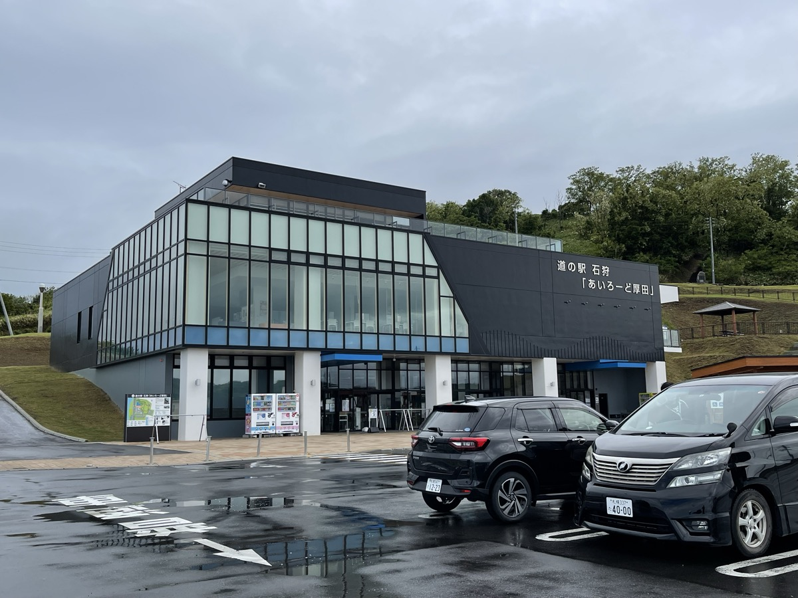
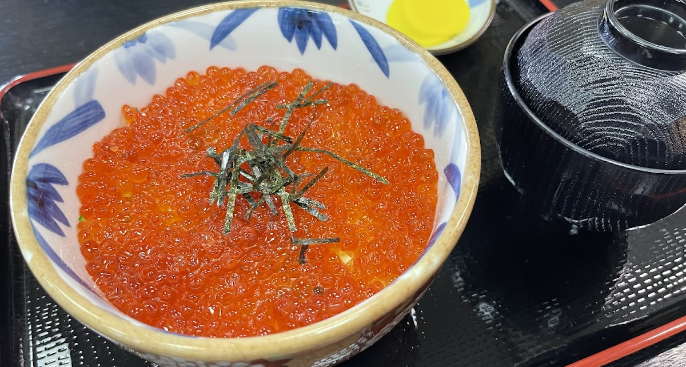
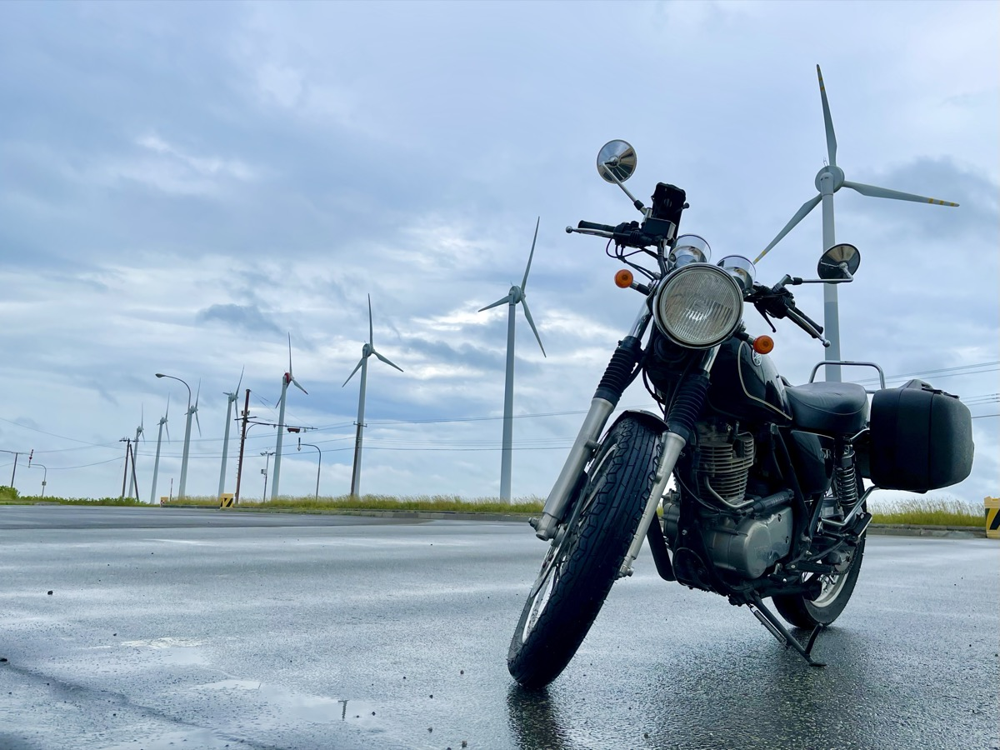
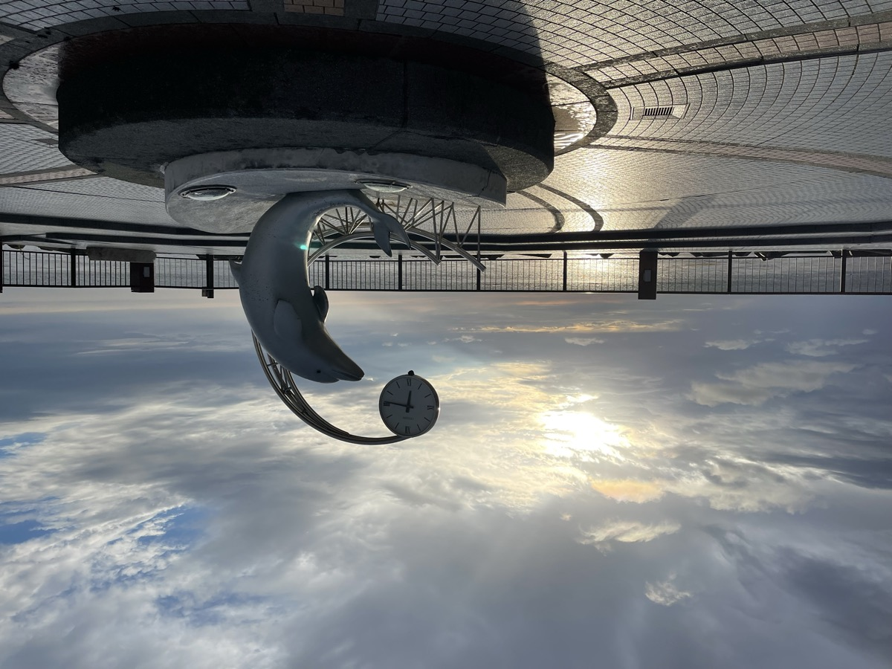
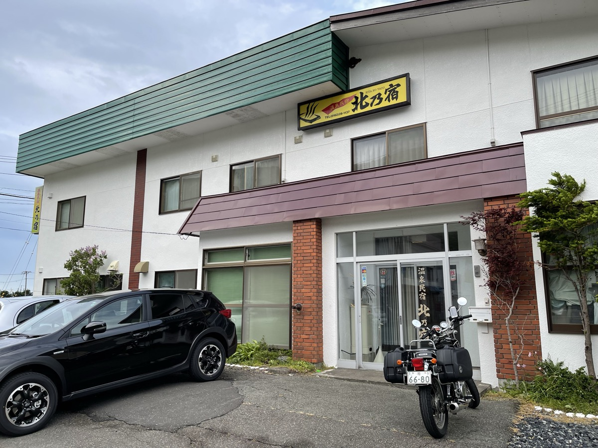

札幌で一泊して目覚めた朝、空はどんよりしていた。今日の目的地は稚内。オロロンラインを北上して日本海を見ながら走る、北海道ツーリングのハイライトのひとつだ。SR400に荷物を積み直して、ホテルリブマックスを出発した。
石狩へ抜ける朝、道の駅あいろーど厚田
札幌市街を抜けて石狩方面へ。海が見えてきたところで道の駅 あいろーど厚田に立ち寄る。展望デッキから日本海が一望できて、晴れていれば気持ちのいい眺めらしい。この日は雲が低かったが、それでも海岸沿いの空気の冷たさが旅を始まらせる。

道の駅 おびら鰊番屋のイクラ丼
札幌を出てから雨が降ったり止んだりの中をずっと走り続けていた。レインウェアを着たり脱いだりするうちに体は冷え切って、テンションも上がりきらない。道の駅 おびら鰊番屋に立ち寄ったのは、もう限界だったから。何気なく注文したイクラ丼が、これが本当に美味しかった。プチプチとした食感が口の中いっぱいに広がって、冷えた体に染み込んでいく。この後も北海道でいろいろな海鮮丼を食べたが、このイクラ丼が一番だった。

オロロンラインを北上する
体を温めて、再び北を目指す。日本海側のオロロンラインをさらに北へ。天塩あたりまで来ると、道の両側が一気に開ける。左は海、右は原野。信号もない。車もほぼいない。

雨は降ったり止んだりが続いていたが、濡れた路面が空を映し込んで、それはそれで最高の景色だった。「晴れだけが旅じゃない」ってこういうことだと思う。

稚内・北防波堤ドーム
オロロンラインを走り切って、夕方には稚内の市街地に着いた。最初に立ち寄ったのは稚内港北防波堤ドーム。古代ローマの神殿のような、コンクリートの柱が並ぶ独特の構造物だ。1936年に建設されたこの防波堤は、強風と高波から港を守るためのもの。中に入ると吹き抜けた風の音が反響して、不思議な空間になっている。


温泉民宿 北乃宿に泊まる
この日の宿は稚内・富士見の温泉民宿 北乃宿。到着した時には体が芯から冷え切っていて、荷を解くより先に温泉へ駆け込んだ。湯に肩まで浸かった瞬間、本当に生き返ったと感じた。一人旅でも泊まりやすい民宿で、ツーリングで疲れた体を温泉でほぐせるのは何よりのご褒美。明日は宗谷岬とエサヌカ線、いよいよ最北端だ。

オロロンライン、雨でも晴れでも走る価値がある。海と原野と風車と、空がやたらと広い道。